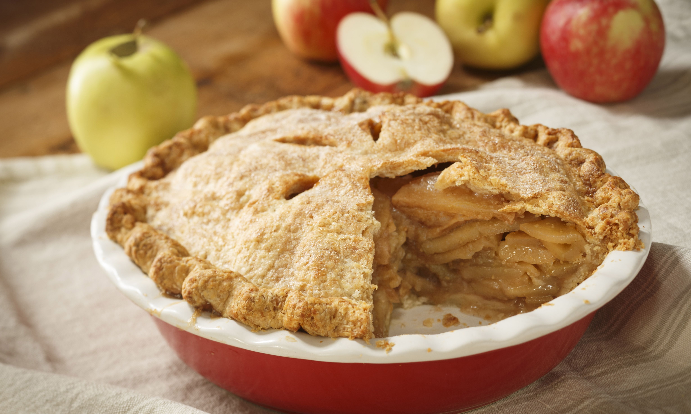

Swedish Apple Pie

Igredients
- 1½ pounds Granny Smith apple - peeled, cored and sliced.
- 1 tablespoon sugar
- 1 cup sugar
- 1 cup flour
- 1 teaspoon cinnamon
- ¾ cup melted butter
- 1 egg
Steps
- Preheat oven to 350 degrees F (175 degrees C)
- toss apples with 1 tablespoon of sugar, and pour them into a pie plate.
Thoroughly mix together 1 cup of sugar with the flour, cinnamon, butter and egg.br>
Spred this evenly over the top of the pie
- Bake in preheated oven until the apples have cooked and the topping is
golden brown, about 40 to 45 minutes.
Back to main page